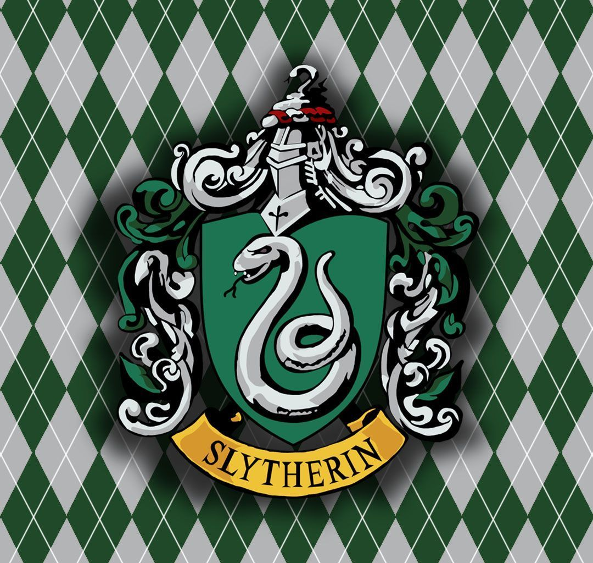

Portal Hogwarts © - 2026.

Sonserina é uma das quatro casas de Hogwarts e é renomada por valorizar ambição, liderança, determinação e astúcia. Fundada por Salazar Slytherin, a casa é feita de alunos estratégicos, confiantes e dispostos a fazer o necessário para alcançar seus objetivos. Suas cores são verde e prata, e seu símbolo é a serpente, representando inteligência e poder. Os estudantes da Sonserina costumam se destacar por sua capacidade de liderança e grande determinação. Entre os principais ex-alunos, destacam-se Draco Malfoy, Severo Snape e Tom Riddle. Apesar da fama de sombria, a Sonserina também é reconhecida por formar bruxos talentosos, inteligentes e extremamente habilidosos.
Portal Hogwarts © - 2026.